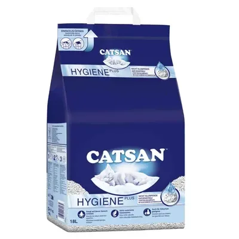

Catsan
Catsan Hygiene Plus
礦物結團貓砂・吸味・18L／20L 袋
單次購買最低（不需訂閱）：Bitiba 2x18L [398457.7] €0.77/L
持平歷史低價
90 天價格水準：偏高（最低 €0.68/L ～ 最高 €0.72/L，依過去 7 天每日最低價）
商店報價（依每單位價排序）
| 店家 | 規格 | 總價 | 每單位價 | 條件 | 購買 |
|---|---|---|---|---|---|
| zooplus.nl | 2x18L [178051.6] | €25.92 | €0.72/L | €29 起免運；€30.49 已逾門檻，免運 需訂閱定期配送 2026-11-28 live browser：2x18L 一次價 €30.49 不變／Gemak 仍 -15% €25.92（€0.72/L），有貨，仍為本品最佳價（€0.72/L）。 | 前往 → |
| zooplus.nl | 1x18L [178051.5] | €13.59 | €0.76/L | 運費 €4.99 需訂閱定期配送 2026-11-28 live browser：1x18L €15.99 一次價不變／Gemak 仍 -15% €13.59，有貨。 | 前往 → |
| Bitiba | 2x18L [398457.7] | €27.72 | €0.77/L | €29 起免運；€29.49 已逾門檻，免運 2026-11-28 live browser：2x18L €29.49 一次價／訂閱 €27.72，價格不變，有貨。 | 前往 → |
| Huisdieren.nl | 1x20L | €15.50 | €0.78/L | 運費 €6.95 原價 €22.75；2026-11-28 live browser：1x20L €15.50（原價 €22.75），價格不變，有貨，庫存仍 9 件。黑五碼 BLACKFRIDAY2026 已失效（活動期 11-21～11-27），昨日按標價算術約 €13.95 不再適用。€59 以下運 €6.95；當日 20:00 前下單當日出貨。 | 前往 → |
| Bitiba | 1x18L [398457.6] | €14.56 | €0.81/L | 運費 €4.99 2026-11-28 live browser：1x18L €15.49 一次價／訂閱 €14.56，價格不變，有貨。 | 前往 → |
| Medpets | 2x20L | €32.45 | €0.81/L | €69 起免運 需訂閱定期配送 2026-11-28 live browser：2x20L €34.50 一次價不變／Herhaal €32.45，價格不變，有貨。 | 前往 → |
| Medpets | 1x20L | €16.55 | €0.83/L | €69 起免運 2026-11-28 live browser：20L €17.60 一次價／Herhaal €16.55，價格不變，有貨。 | 前往 → |
| Pharmapets | 1x18L | €15.25 | €0.85/L | 運費 €3.99 需訂閱定期配送 2026-11-28 live browser：1x18L €16.95，價格不變，Direct leverbaar；訂閱首單 €15.25（-10%，其後 -5%）；免運 €39。 | 前往 → |
| Pets Place | 1x20L | €17.69 | €0.88/L | €39 起免運，另加每件 €1.95 運輸附加費 2026-11-28 live browser：1x20L €17.69，價格不變，有貨；額外運輸附加費 €1.95／件；免運 €39。 | 前往 → |
| Zeeuwse Pootjes | 1x20L | €17.69 | €0.88/L | 荷蘭境內 €6.95 起，重／大件另加 €7.95或 €12.95；免運門檻未顯示 2026-11-28 live browser：選「20 liter」變體後顯示 €17.69、5 op voorraad，價格不變，有貨；11.5L 為 €10.69。 | 前往 → |
| Medpets | 1x11.5L | €10.80 | €0.94/L | €69 起免運 需訂閱定期配送 2026-11-28 live browser：11.5L €11.50 一次價／Herhaal €10.80，價格不變，有貨。 | 前往 → |
| Zeeuwse Pootjes | 1x11.5L | €17.69 | €1.54/L | 荷蘭境內 €6.95 起，重／大件另加 €7.95或 €12.95；免運門檻未顯示 2026-11-28 live browser：選「11.5 liter」變體後顯示 €10.69，價格不變，有貨；20L €17.69。 | 前往 → |
| De Welpenhoeve | 2x18L | €25.00 | €0.69/L | 荷蘭每件 €7.95 處理費，雙包裝只算一次；免運門檻未顯示 未核實 2026-11-28 live browser：2x18L €25.00，價格不變；Beschikbaar；出貨 1–5 工作天。頁內寫法不一：標題／網址寫 2x18 liter，但頁內品項行寫「Catsan Hygiëne Plus 2x20 liter」、商品圖為 20L 包裝；僅供參考，不進排名。 | 前往 → |
| petfooddiscount.nl | Catsan Hygiene korrels 1x11.5L | €9.99 | €0.87/L | €49 起免運，€49 以下運費未顯示 未核實 建議價 €10.69；2026-11-28 live browser：Catsan hygiene korrels 11.5 liter €9.99（建議價 €10.69），價格不變，有貨；免運 €49。注意：標題未寫 Hygiene Plus，描述寫「Inhoud: 10 liter」，但商品圖袋身顯示 Hygiene Plus；規格存疑，不進排名。 | 前往 → |
| bol.com | 1x20L | €15.29 | €0.76/L | bol 訂單 €25 起免運 沿用 2026-11-25 報價 Black Friday（建議價 €17.99）；2026-11-25 live browser：1x20L €15.29（€0.76/L，Black Friday 價，建議價 €17.99），有貨，與 2026-11-24 相同，無變化，仍為一次價最低；由 bol 銷售，另有 8 個合作夥伴。滿 €25 免運；20:00 前下單明日到貨。 | 前往 → |